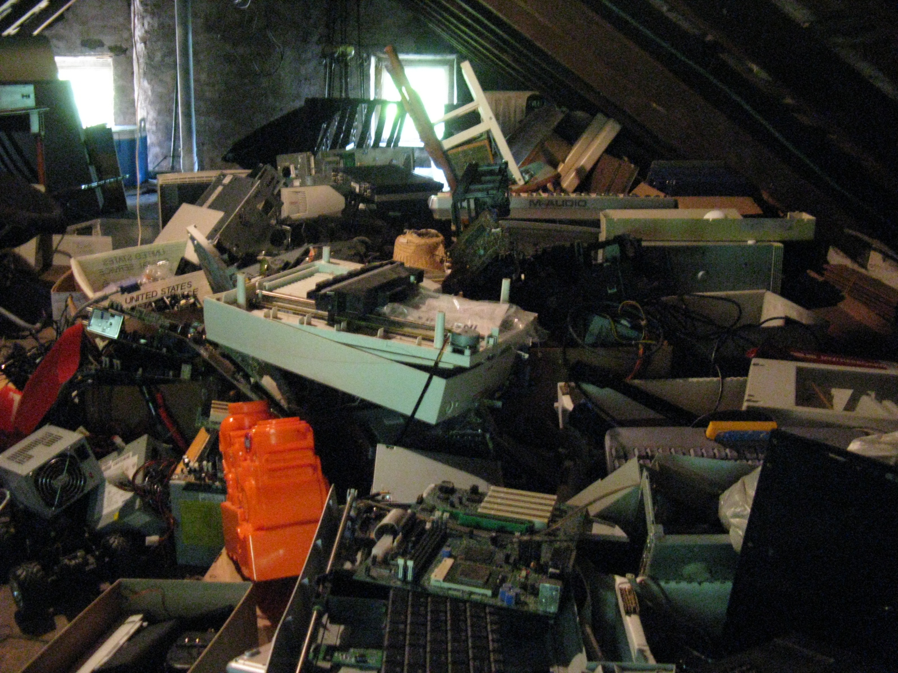
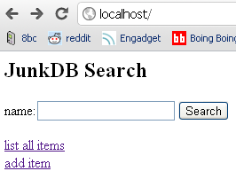
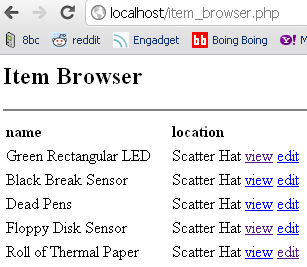
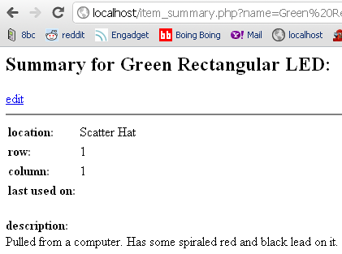

 My hoard in the attic of my childhood home
I have always been a hoarder of junk. I love the possibilities represented in junked machines. Digging through a junk pile is a great way to get inspired. And sometimes you get lucky and find just the part you need for what you are working on.
At various points I've tried to use or build systems to organize my junk collection so it would be more useful to me. I made my first attempt at building one of these systems when I was in middle school. I called it JunkDB. It was a crappy CRUD application written in PHP. It was fun to work on but I never really used it intensively because of the prohibitive time cost of entering the information about my junk collection into its database.


